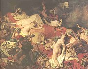

|
|
 |
|
 |
Obsah
Anglie
Francie
Nìmecko
Spojené státy americké
Rusko
Èechy
+ Karel Hynek Mácha
Co si pøedstavíš pod slovem romantickı? Kdo je romantik?
Zjisti pøesnı vıznam slov román, romance, románskı a romantickı.
Co má spoleèného romantickı veèer s romantismem?
|
ROMANTISMUS
Romantismus se zaèal prosazovat na pøelomu 18. a 19. století. V angliètinì toto slovo pùvodnì znamenalo románovı, èili vymyšlenı nebo neskuteènı. Mnozí souèasníci vidìli v romantismu módní pózu a romantiky vùbec nechápali. V nejširším slova smyslu byl romantismus ivotní pocit, kterı vyvìral z dobové atmosféry. Romantici upøednostòovali cit pøed rozumem, šíøili revoluèní ideály, prosazovali obèanské svobody a individualismus. To všechno jim soudobá spoleènost nenabízela. Ba právì naopak, v reakci na èetná povstání se panovníci uchylovali k omezování svobod a teroru. Romantici nemohli prosadit ani nové uspoøádání svìta, ani se nedokázali zaøadit do spoleènosti. Vısledkem byla naprostá deziluze. Romantiètí umìlci hledali útìchu v nespoutané pøírodì, bájné minulosti, vysnìné historii, exotickıch dálkách nebo neškodné fantazii. Prùchod revoluènímu nadšení, hluboce proívanému rozporu mezi ideálem a skuteèností nebo pøesvìdèení o vlastní vıjimeènosti dávali alespoò ve svıch literárních dílech. Romantismus se prosadil nejen v Evropì, ale také v Americe nebo Indii (èhájavád).
|
Historie
Úspìšnı boj britskıch kolonií v Americe za nezávislost (1776), Velká francouzská revoluce (1789-1794) a zmaøené úsilí Napoleona o svìtovládu (1799-1815) rozpoutaly mezi absolutistickımi panovníky obavy z dalších pøevratù. Vìtšina evropskıch vládcù pøistoupila k Svaté alianci, která mìla bdít nad novım rozdìlením Evropy po vídeòském kongresu (1814-1815). Záhy ale pøišly další revoluce. Ve 20. letech povstali Španìlé, Øekové a Rusové, ve 30. letech Francouzi, Belgièané a Poláci a roku 1848, tzv. jaro národù, u prakticky celá Evropa (Itálie, Nìmecko, Francie, Rakousko).
|
Doba revolucí

Delacroix: Svoboda vedoucí lid
|
Doba revolucí
Konec 18. století byl ve znamení revolucí. Povstalci usilovali o samostatnost (Spojené státy americké) nebo o zmìnu politického uspoøádání (Francie). Revolucionáøi upøednostòovali republiku pøed monarchií a konstituci pøed absolutismem, prosazovali obèanské svobody a definovali základní lidská práva. Nové poøádky nastolovali násilím.
Heslo Velké francouzské revoluce bylo „volnost, rovnost, bratrství“. Rozchod s minulostí mìly zdùraznit nové názvy mìsícù, novı letopoèet, sjednocení metrického systému, názvy institucí (Vıbor pro veøejné blaho, Národní shromádìní...) nebo náboenské reformy. Rozpoutanı teror dopadl na 200 000 lidí, kteøí skonèili pod gilotinou.
Øecko si vybojovalo nezávislost na Turecku (1821-1829). Nová vlna revolucí pøišla v roce 1830. Francouzi svrhli bourbonskou dynastii, Belgièané získali samostatnost a Poláci neúspìšnì povstali proti ruské nadvládì.
Opravdu revoluèním obdobím bylo jaro národù (1848-1849). Vypukla povstání ve Francii, rozdrobené Itálii a Nìmecku. V Rakousku povstala Vídeò, Budapeš i Praha. Všechny revoluce byly neúspìšné.
|
Delacroix: Øecko umírá v troskách Missolunghi
|
Nacionalismus
V Itálii vznikl pod vlivem svobodnıch zednáøù tajnı spolek karbonáøù. Karbonáøi bojovali proti rakouské nadvládì a podíleli se na revolucích v Neapoli a Piemontu. Pozdìji se pøipojili k hnutí Mladá Itálie. Francouzští karbonáøi zase bojovali proti Bourbonùm.
Giuseppe Mazzini
|
Nacionalismus
Formování národù probíhalo v Evropì velmi dlouho. Zprvu byla klíèová pøíslušnost k urèitému náboenství a lidé se dìlili na køesany, idy a muslimy. Dùleité bylo také zaøazení do daného stavu – šlechta, duchovenstvo, poddaní, svobodní sedláci, mìšané atd. Základem vlastenectví byla nejprve pøíslušnost k urèitému území, pøípadnì spoleènı jazyk. Na konci 18. století se k tìmto znakùm pøidávají ještì spoleèné dìjiny, lidová kultura nebo umìní. Vısledkem bylo nové pojetí identity zaloené na pøíslušnosti k urèitému národu. Horliví vlastenci vidìli v národì svébytnı celek, kterı má urèitou povahu, poslání, ducha, nepøátele atd. Pozdìji se stalo prosazování národních zájmù hlavním programem nìkterıch politikù.
Snaha nacionalistù o vytvoøení národních státù vedla k celé øadì povstání. Podle situace usilovali revolucionáøi buï o nezávislost na vìtších státních celcích (Spojené státy americké, Øecko, Belgie), nebo o sjednocení menších státù do jednoho (Nìmecko, Itálie). Nacionalisté zakládali tajné revoluèní spolky. Zvláštì aktivní byl Ital Giuseppe Mazzini (1805-1872), zakladatel hnutí Mladá Evropa, které sdruovalo spolky Mladá Itálie, Mladé Nìmecko a Mladé Polsko. Obdobnımi organizacemi bylo Mladé Irsko a Mladé Rusko nebo èeskı revoluèní spolek Repeal.
|
Co si myslíš o nacionalismu?
Jakı je tvùj názor na budoucnost èeského národa v Evropské unii a globalizovaném svìtì?
Popiš èeskou národní povahu.
Které vıroky se tradují o rùznıch národech? Jsou pravdivé?
Jakı je rozdíl mezi národem, národností a obèanstvím?
Charakterizuj osud národnostních menšin v rùznıch národních státech?
Které národy nemají vlastní státy? Proè?
Ve kterıch státech ije svornì více národností?
Které státy mají problémy s nacionalismem? Jak by se daly vyøešit?
Co je multikulturní spoleènost?
|
Romantická literatura

Leonardo Alenzo: Romantická sebevrada
|
Romantická literatura
Romantikové nerespektovali klasicistní pravidla a vyznávali tvùrèí svobodu. Podle libosti mísili literární ánry i formy – tvoøili lyrickoepické skladby, romány v dopisech, verších a novelách nebo tragikomedie.
Romantické postavy odráejí nenaplnìné touhy spisovatelù a èasto mívají autobiografické rysy. Hrdinové knih se bouøí proti spoleèenskım konvencím, ijí na okraji spoleènosti (vìzni, zbojníci, tuláci, Cikáni a další vydìdìnci), proívají nešastnou lásku a vìtšinou konèí tragicky. Romantická díla pøekypují vášnìmi a city. Autoøi se zamìøují na psychologii postav. Zvláštì typickı je pro romantiky subjektivismus a zájem o minulost. Historická vìrnost jim na srdci pøíliš neleela. Minulost byla spíše kulisou, jejím prostøednictvím chtìli evokovat krásné zašlé èasy, kdy lidé proívali opravdové city. Nejoblíbenìjším obdobím byl støedovìk.
Jaké národnosti byli následující romantici? Mickiewicz, S³owacki, Ševèenko, Leopardi, Lenau, Petöfi, Lönnrot, Prasád, Prémèand. Co o nich víš?
|
Populární ètivo
S rozmachem gramotnosti rostla obliba nenároèné zábavné literatury. V dobì romantismu se zrodila celá øada ánrù – èernı román, horor, detektivka, dobrodrunı pøíbìh, indiánka nebo èervená knihovna, které jsou velmi populární dodnes. Vìtšinou šlo o nepøíliš kvalitní produkci.
Kteøí autoøi se vìnovali psaní nenároèné literatury? Ve kterıch ánrech vynikli?
Èteš nìkterı z uvedenıch ánrù soustavnì? Proè?
Co je brak, kıè a ètivo? Jak se liší od umìlecké literatury?
|
Vıtvarné umìní

Nìmeckı novogotickı zámek Neuschwanstein

Delacroix: Sardanapalova smrt
|
Architektura, malíøství a sochaøství
V 19. století se v architektuøe prosadil historizující sloh (historismus), kterı èerpal inspiraci v minulıch umìleckıch epochách (neogotika, novorenesance) nebo orientálních budovách (Èína, islámské zemì). Jednotlivé stavby jsou tudí velmi rùznorodé. Budovaly se napodobeniny støedovìkıch kostelù i hradù (Neuschwanstein, Hluboká), zøíceniny (Janohrad) nebo veøejné stavby (Londınskı parlament, Národní muzeum v Praze). Novı vztah ke krajinì dal vzniknout rozhlednám. Anglické parky (Lednicko-valtickı areál) více respektují pøírodu. V malíøství a sochaøství se objevují revoluèní témata a historické námìty. Krajináøi zachycují dramatické pøírodní vıjevy (bouøe). Vzhled interiérù ovlivnil biedermeier.
Géricault: Vor Medusy
|
Fiedrich: Poutník nad moøem mlhy
Constable: Katedrála v Salisbury
|
Hudba
Romantismus ovlivnil i tzv. národní hudební školy. V Èechách to byli skladatelé Bedøich Smetana (1824-1884), Zdenìk Fibich (1850-1900) nebo Antonín Dvoøák (1841-1904). Znáš jejich díla?
Kdo napsal následující opery? Fidelio, Èarostøelec, Lazebník sevillskı, Vilém Tell, Aida, Rigoletto, Nabucco, Traviata, Trubadúr, Prsten Nibelungùv, Parsival, Tristan a Izolda, Lohengrin, Mistøi pìvci norimberští, Bludnı Holanïan.
|
Romantická hudba
V dobì romantismu velmi vzrostla obliba hudby. Pøedním skladatelem byl Ludwig van Beethoven (1770-1827). V hudbì vynikli rovnì Italové Giuseppe Verdi (1813-1901) a Gioacchino Rossini (1792-1868), Nìmci Carl Maria von Weber (1786-1826), Felix Mendelssohn-Bartholdy (1809-1847), Robert Schumann (1810-1856) a Johannes Brahms (1833-1897), Francouz Hector Berlioz (1803-1869), Rakušan Franz Schubert (1797-1828), Maïar Ferenz Liszt (1811-1886) nebo Polák Fryderik Chopin (1811-1886). Nejvıznamnìjším pøedstavitelem hudebního novoromantismu byl nìmeckı operní skladatel Richard Wagner (1813-1883), kterı pøišel s koncepcí gesamtkunstwerku – syntetického dramatického celku, kterı neopomíjel ádnou umìleckou sloku.
Mezi houslisty vynikal italskı génius Niccolò Paganini (1782-1840).
|

Delacroix: Chopin
|
Novoromantismus
Cole: Architektùv sen
|
Novoromantismus
Na konci 19. století se nìkteøí umìlci znovu obrátili k romantickım tématùm. Novoromantiky byli skotští spisovatelé Robert Louis Stevenson (1850-1894), autor dobrodruného románu Ostrov pokladù nebo hororu Podivnı pøípad dr. Jekylla a pana Hyda, a Arthur Conan Doyle (1859-1930), autor detektivních pøíbìhù o Sherlocku Holmesovi nebo fantastického románu Ztracenı svìt. Mùeme k nim zaøadit i Brauna Stokera (1847-1912) a jeho horor o hrabìti Draculovi. K novoromantismu se hlásil také Francouz Edmont Rostand (Cyrano de Bergerac) nebo
Èech Julius Zeyer.
|
Novoromantismus

Spitzweg: Chudı básník
|
Internetové stránky
Romantismus
Romantic art, reprodukce
Romantische Malerei, reprodukce
Romantic Poetry
Petöfi: Koncem záøí, Z dáli
Exkurze
Lednicko-valtickı areál
Neuschwanstein, zámek

Bengt Erland Fogelberg: Odin
|
Doporuèená èetba
Bìlousov, Roman Sergejeviè: Knihy o tom mlèí, pøel. M.Pittermannová, Mladá fronta, Praha 1971
Delacroix, E.: Deník, Praha 1956
Doyle, Arthur Conan: Mu s dımkou a houslemi
Doyle, A.C.: Pes baskervillskı, pøel. F.Gel, Albatros, Praha 1978
Doyle, A.C.: Pøíbìhy Sherlocka Holmese, pøel. Henzl, Zábrana, Jota, Brno 1997
Fischer, Ernst: Pùvod a podstata romantismu, Praha 1966
Lenau, Nikolaus: Blesky nad roklí, pøel. J.Mulaè, Mladá fronta, Praha 1969
Leopardi, Giacomo: Poesie Luny, pøel. K.Bednáø, SNKLHU, Praha 1959
Lynton, Norbert: Umìní 19. a 20. století, pøel. V.Nosková, Artia, Praha 1981
Mickiewicz, Adam: Konrád Wallenrod, Dziady, pøel. F.Halas, SNKLHU, Praha 1954
Mickiewicz, A.: Pan Tadeáš èili Poslední nájezd na Litvì, pøel. E.Sojka, Odeon, Praha 1969
Michelet, J.: Francouzská revoluce, Praha 1989
Hegel, G.W.F.: Estetika
Kalevala, pøel. J.Holeèek, Odeon, Praha 1980
Pijoan, José: Dìjiny umìní, 8.díl
Petöfi, Sándor: Mé písnì, Rovnost, Brno 1950
Romantismus, pøel. F.Serrano, Paseka, Praha 2001
Rostand, Edmond: Cyrano z Bergeraku
S³owacki, Juliusz: Já Orfeus, pøel. J.Pilaø, Odeon, Praha 1987
Stevenson, Robert Louis: Ostrov pokladù
Stevenson, R.L.: Podivnı pøípad dr. Jekylla a pana Hyda
Stoker, Braun: Dracula, pøel. T.Korbaø, Práce, Praha 1991
Ševèenko, Taras: Bílé mraky, èerná mraèna, pøel. Z.Bergerová, Praha 1977
|
Pøiprav si referát o nìkteré z uvedenıch knih nebo internetovıch stránek.
John Martin: Bard

Romantickı (anglickı) park
|
|